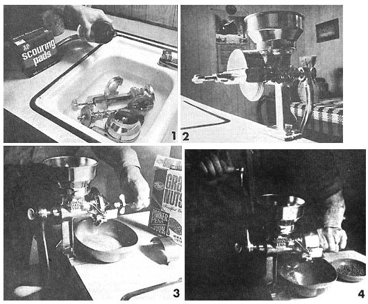

1. Use vinegar, warm water, soap-impregnated steel wool and elbow grease for the first cleaning of your mill. 2. The business end of the assembled Corona. Note scrap of wood under base to protect counter. 3. For a finer grind, tighten adjustment screw. Note removeable cover which keeps ground grain from flipping upward. Old ""throw-away"" processed cereal can be used for Corona's trial run. 4. Grinding wheat. It seems natural (even for lefties) to grip adjustment screw with left hand while cranking with right.